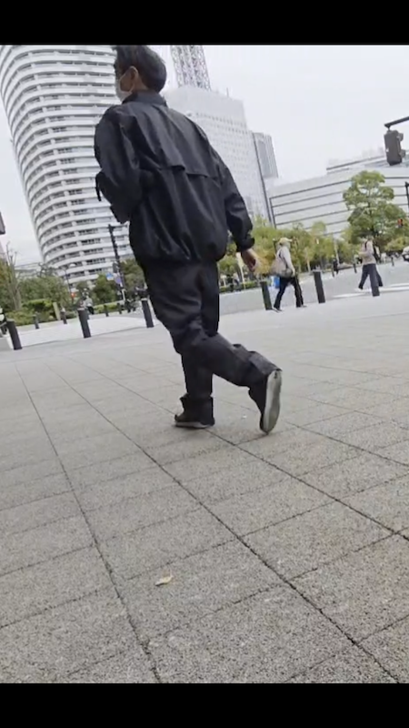

男性
正装上着のありなし（例）
男性
私服上着あり（例）

男性女性
私服上着なし（例）

観測テーマ
OKみなとみらい店入口前で定点カメラを設置
同時並行で数取器（カウンター）による計測
赤ちゃんは含まない


14時〜15時の間はスーツなどの正装を着用している人が少ない。
→もう少し夕方の時間にやってみたら正装の人はもっと多かったかもしれない
男性よりも女性の方が多かった
→専業主婦が夕飯の買い物などのために多くいたのではないか。
男性も女性も上着を着ている方が多かった
→これからどんどんと上着の着用が増えていくと考える
観測テーマ
移動動画を撮影
その動画で数取器（カウンター）による計測
赤ちゃんは含まない


14時〜15時の間はスーツなどの正装を着用している人が少ないが定点観測の時よりは多かった
→駅からの大通りだったから正装の人が多かったのかもしれない
こちらは男性の方が多かった
→スーツ姿の男性が少し増えたためその分男性の人数が増えていたのではないか
女性は上着を着ている方が多かった
→様々な上着があってオシャレのために着用している人も多いのではないか